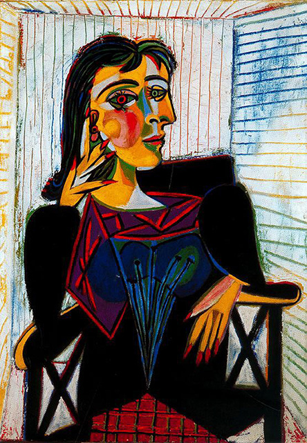

The Actor
Pablo Picasso
over another painting, because
he could not afford new canvases at the time.
he could not afford new canvases at the time.

Portrait of Dora Maar
Pablo Picasso
The canvas was one of many portraits of Dora Maar painted by
Pablo Picasso over their nearly decade-long
Pablo Picasso over their nearly decade-long

Sunflowers
Vincent Van Gogh
(original title, in French: Tournesols) are the subject of two series of still life paintings
by the Dutch painter Vincent van Gogh.
by the Dutch painter Vincent van Gogh.